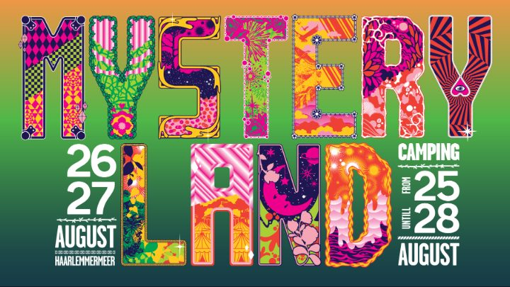

Lock N Load Events presents… Haunted House London


As far as Halloween shows go, it doesn’t get any bigger or better than this. On Saturday 2nd November at the iconic O2 Academy Brixton, an act at the forefront of a burgeoning electronic music movement will take centre stage. That act is Knife Party.
The fearsome duo will be headlining the spooky proceedings for what will be London’s most raucous Halloween show of 2013. As Knife Party’s biggest event in the capital to date and with some very special guests yet to be announced, now is the time to get your fangs into a heavy night of bass-ridden indulgence.
The Haunted House phenomenon begun last year with a US Tour and has since gone on to spook crowds in Miami and Ibiza, with a residency at Amnesia that has taken the Island by storm this summer. Knife Party’s Haunted House has raised the bar for huge parties of music and mayhem, with mind blowing production, an onslaught of beats from the headliners and special guest DJs and unique live performers inside the clubs. Now Knife Party will be unleashing the Haunted House for the first time ever in the UK, providing full sensory overload and a night of mayhem and ‘seizure music’ guaranteed.
Having become a pivotal act in the electronic music world since releasing their first EP ‘100% No Modern Talking’ at the end of 2011, Knife Party have quickly risen to be seen as pioneers at the forefront of the scene. This status has been reinforced with hits such as ‘Antidote’ their collaboration with Swedish House Mafia, ‘Internet Friends’ which has had over 3.5 million views on YouTube, and their EP ‘Rage Valley’ which broke the Top Ten iTunes chart in the US, UK and Australia. Their latest release ‘Haunted House’, pushed boundaries even further and marked a welcome and typically uncompromising return from the duo that has shocked dancefloors the world over. Expect to hear classic material as well as new sounds at their London performance and some surprises that will turn Brixton’s O2 Academy into an unforgettable Halloween experience for the night.
Joining Knife Party on the bill for this special night is the LA born producer Dillon Francis. Recognised as the protege to Diplo and a pioneer in the Moombahton genre, he has become one of the most in demand DJs on the planet today. Fresh from several performances at festivals this summer, don’t miss this opportunity to see him up close and personal and feel the full force of his bass-heavy selections.
Also joining in on the Halloween festivities are fellow American DJs Flosstradamus. As leaders of the pack in the Trap movement, they found fame through bone breaking remixes of high profile acts such as Sub Focus and Major Lazer. The Hoodie Boyz high energy sets mark them as a ‘must see’ act of 2013, so expect mayhem from the Chicagoans and welcome them to London in true Haunted House fashion.
Long hailed as London’s flagship venue and with a capacity of nearly 5000, the O₂ Academy Brixton is famed for its incredible atmosphere and will be the perfect stage to witness the huge production of the Haunted House and the unstoppable force that is Knife Party.
This is a must see event so make sure you get your tickets below NOW!
To buy tickets for this event please visit the events page: Knife Party presents HAUNTED HOUSE tickets from Skiddle.
These tickets are on sale for Knife Party presents HAUNTED HOUSE. Skiddle.com is an official ticket outlet for this event. All credit card purchases you make at Skiddle.com are encrypted through our Secure Server Technology
]]>